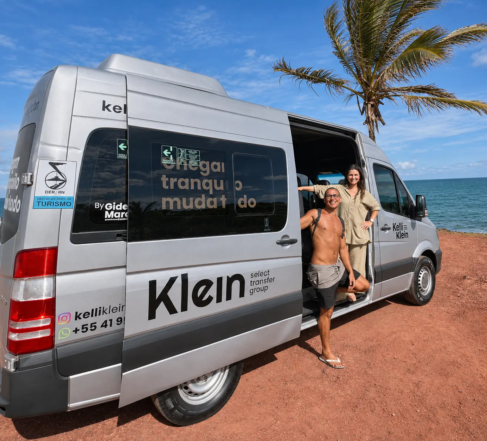

Transfer do Aeroporto de João Pessoa para Pipa
Do Aeroporto Internacional Presidente Castro Pinto até a Praia da Pipa são cerca de 150 km pela BR-101, com tempo médio de 2h30 de viagem.
Distância≈ 150 km
Tempo médio2h30
Traslado privativo dos aeroportos de Natal, João Pessoa e Recife para a Praia da Pipa, e de Pipa de volta ao aeroporto. Carro para até 4 pessoas, motoristas 24 horas e reserva pelo WhatsApp.
O Aeroporto Internacional de Natal – Governador Aluízio Alves fica em São Gonçalo do Amarante, a cerca de 100 km da Praia da Pipa. O caminho segue pela BR-101 no sentido sul até Goianinha e depois pela RN-003 até Tibau do Sul e Pipa. A viagem leva em torno de 1h40.
No transfer da Kelli Klein, um motorista treinado recebe você no desembarque no horário combinado, ajuda com as malas e leva direto até a porta da pousada, hotel ou casa de temporada em Pipa, inclusive nas ruas de areia e nos condomínios mais afastados do centro.
Os motoristas trabalham 24 horas, então dá para reservar o transfer para voos que chegam de madrugada. Também fazemos o caminho de Pipa para o Aeroporto de Natal, com saída calculada para você chegar com folga ao check-in.
Às vezes a passagem para a Paraíba ou para Pernambuco sai mais em conta. A Kelli Klein busca você no desembarque e segue direto para Pipa em carro privativo.
Do Aeroporto Internacional Presidente Castro Pinto até a Praia da Pipa são cerca de 150 km pela BR-101, com tempo médio de 2h30 de viagem.
Do Aeroporto Internacional do Recife – Guararapes até a Praia da Pipa são cerca de 270 km, com tempo médio de 4h30 de viagem, com conforto e paradas quando precisar.
Todos os trechos funcionam nos dois sentidos, em carro privativo para até 4 pessoas. O valor é enviado pelo WhatsApp conforme o trecho, os passageiros e o horário.
| Trecho | Distância aprox. | Tempo médio | Indicado para |
|---|---|---|---|
| Aeroporto de Natal ⇄ Pipa Ida e volta | 100 km | 1h40 | Rota principal, 24 horas |
| Aeroporto de João Pessoa ⇄ Pipa Ida e volta | 150 km | 2h30 | Voos com chegada na Paraíba |
| Aeroporto de Recife ⇄ Pipa Ida e volta | 270 km | 4h30 | Voos internacionais e conexões em Recife |
| Hotéis e pousadas de Natal ⇄ Pipa Ida e volta | 85 km | 1h20 | Quem se hospeda em Natal antes ou depois de Pipa |
| Hotéis e pousadas em Pipa e Tibau do Sul | — | — | Trocas de hospedagem e deslocamentos locais |
Distâncias e tempos médios por estrada. Outros destinos no RN, PB e PE sob consulta.
Para até 4 passageiros com bagagem de viagem. O carro da própria Kelli ou de um motorista parceiro de confiança, com ar-condicionado e dedicado só ao seu trecho.

Para grupos maiores, com espaço para malas grandes, pranchas e equipamentos. Todo mundo chega junto em Pipa.
Data, número do voo, quantidade de passageiros e malas, e o endereço em Pipa.
Respondemos pelo WhatsApp com o orçamento fechado do trecho e as opções de veículo.
Você recebe o nome do motorista, o modelo do carro e o ponto de encontro no aeroporto.
O motorista recebe você no horário combinado e leva direto até a hospedagem, com segurança.
O transfer privativo tem valor fechado por trecho, que varia conforme o veículo, o número de passageiros e o horário. Peça o orçamento pelo WhatsApp informando a data e o voo.
Sim. Os motoristas trabalham 24 horas. Com a reserva feita antes, atendemos voos em qualquer horário, inclusive chegadas de madrugada.
O carro privativo leva até 4 pessoas com bagagem. Para grupos maiores, organizamos van ou mais de um carro.
São cerca de 270 km e, em média, 4h30 de viagem. Do Aeroporto de João Pessoa são cerca de 150 km e 2h30.
Sim. Os carros são certificados com placa vermelha, regularizados para o transporte remunerado de passageiros, e os motoristas são treinados para um atendimento de alta qualidade.
Sim, o transfer é pet friendly. Informe o porte e se o pet viaja em caixa de transporte para prepararmos o veículo.
Sim. Recebemos muitos turistas argentinos e atendemos em português e espanhol.
No desembarque, logo após a área de bagagens. Antes da viagem você recebe o nome, o contato do motorista e os dados do carro.
Volte com boas histórias. Reserve seu transfer Natal Pipa agora.
Falar com a Kelli Klein